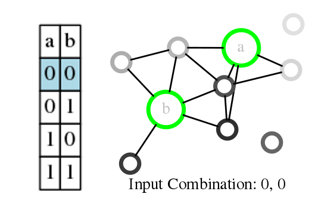
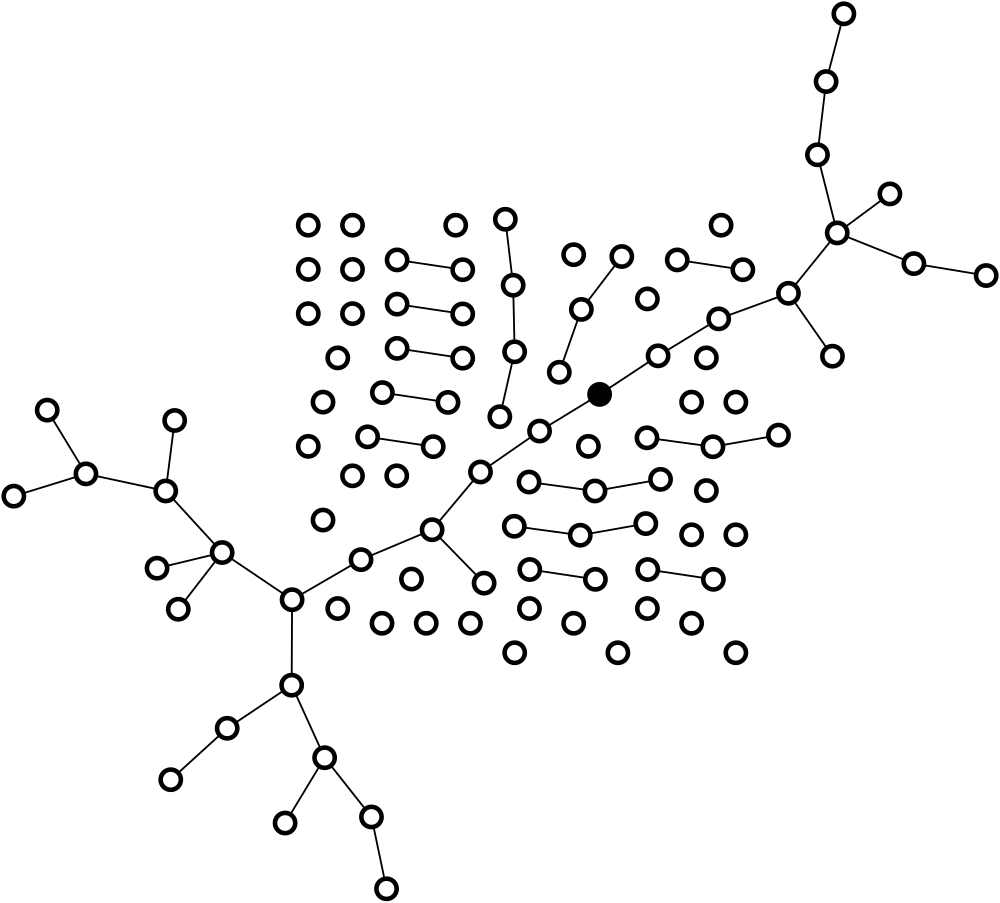

About Galen
Embarking on an inspiring journey through the realms of complex systems and artificial intelligence, Galen J. Wilkerson has dedicated his career to unraveling the mysteries of these intricate fields. Galen has been a beacon of innovation and collaborative spirit.
His journey is not just about exploring the depths of AI and complex systems but also about building bridges between disciplines, fostering collaboration, and creating a symphony of interdisciplinary knowledge.
Projects
Galen's projects are a testament to his passion for AI and complex systems:
-
LTM Logic: A simulation of Linear Threshold Models demonstrating the interplay between network cascades and Boolean logic functions, reflecting the intricate balance of activation patterns and percolation in complex systems.
-
Logic and Learning in Network Cascades: This project symbolizes the cascading effects of shared knowledge and collective wisdom in AI and complex systems.
-
 Hopfield Networks: An insightful repository offering a deep dive into Hopfield Networks, featuring theoretical explanations, practical implementations, and detailed visualizations, ideal for understanding this neural network model.
Hopfield Networks: An insightful repository offering a deep dive into Hopfield Networks, featuring theoretical explanations, practical implementations, and detailed visualizations, ideal for understanding this neural network model. -
Swarm-Induced Graph: A project that showcases the dynamic interactions within robotic systems, embodying the essence of collaboration and communication.
-
Logistic Map and Chaos Exploration: Delving into the chaotic yet orderly nature of complex systems, this project highlights the beauty of mathematical chaos in AI.
-
Random Boolean Networks: An exploration into the simplicity and complexity of networked systems, akin to the networks of collaboration Galen cherishes.
-
Large Language Models: Reflecting on the power of language and communication, a field where collaboration is key.
Publications
Galen's publications are a mirror to his intellectual journey:
-
 Spontaneous emergence of computation in network cascades. Scientific Reports, 2022.
Spontaneous emergence of computation in network cascades. Scientific Reports, 2022. -
Logic and learning in network cascades. Network Science, 2021.
-
Universal Boolean logic in cascading networks. Springer, 2019.
-
Urban mobility scaling: Lessons from ‘little data’. IEEE, 2014.